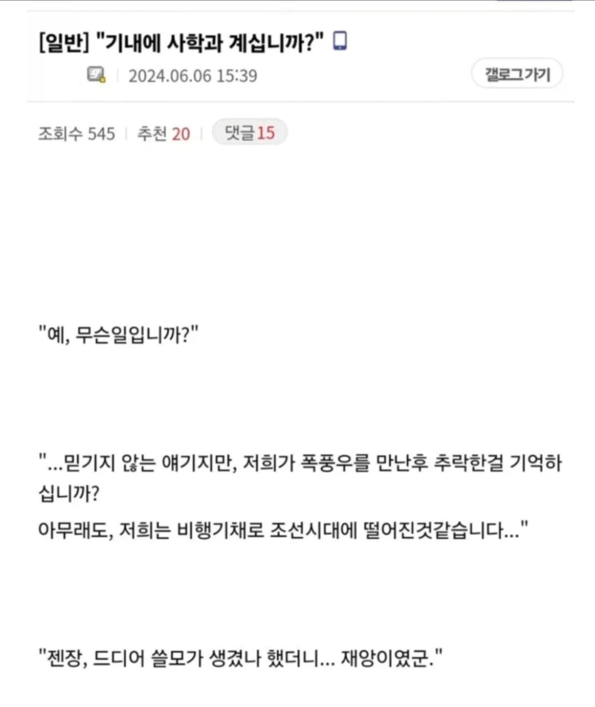

나무위키 빨 스펙이면 고증에서 딸리긴 함 ㅋㅋㅋ
재앙인 이유는 뭐 여러 가지 있겠지만...
그거 다 극복해도 어차피 보학으로 근본 다 따지는 시대에
저렇게 갑툭튀한 사람은 쌍놈이기 때문이지 ㅋ
정체가 뭔지 모를 거대한 쇳덩이에서 사람이 나오면 하늘이 보낸 사람들인가 할 거 같은데
그럼 왕권에 위협이 되니 다 죽이겠구나
천군?
하늘이 보낸 사람이라면 내 칼질 정도로는 위험하지도 않겠군 푹찍
비행기가 고장이 났는데 낙하산이 모자랍니다
선착순입니다
이 비행기에 사회학과 계십니까?
"젠장, 쓸모 없는 놈 부터 뛰어내리라 이거군"
? 낙하산이 모자란가?
어중간한 지식으로 민주주의 전파하다 효수 예정
문사철 버리기부터 시작해야지
이것은 비차라고 하는 것이다
한제국건국사
신쥬신건국사
혹시 이 비행기에 부사관학과 계십니까?
당장 내려 ㅋㅋㅋ 폭력적이네 ㅠㅠ 밥굶학
"제 전공은 근대 서양사 인데요?"
근데 오히려 개쓸데없는 학과에 부자애들 많음 ㅋㅋㅋㅋ
쓸데있는 학과에는 더 많음 ㅋㅋㅋㅋ
그건 돈 못버는 예체능에 부자가 얼마나 많은지 몰라서 하는 말임 ㅋㅋ
예체능에는 부자 아닌애가 있긴 하냐..?
가난한 애(다른곳에선 중산층)도 있긴해 ㅋㅋ
아님ㅋㅋ
???:프롤레타리아의 상상력이란..
아닌데ㅋㅋㅋ
동양사학과
"서울대 동양사학과"
같은반이었던 공부 ㅈㄴ 잘하는 놈이 사학과 가길래 왜? 했는데
할아버지가 사립학교 이사장이더라...
영어만 해도 먹고살겠지. 양반 아니라고 대신들이 개지랄해서 목이 쳐질 것 같지만
중세국문학과 없어서 오랑캐행
현대인이 조선시대 가면 상투도 안틀고 머리랑 수염 밀어버린 호로새끼란 댓글이 잊혀지질 않는다
조선에 표류한 양놈들도 다 받아들이고 벼슬까지 줬던 나라인데 현대 지식있는 사람들이 무더기로 떨어지면
쓸모에 따라 벼슬까진 못줘도 먹고살 방도는 만들어 줄거임.
박연은 무려 화약 기술자라 대우가 좋았고
하멜은 그냥 문돌이 상인이라 거의 감금당함
연료가 모자랍니다.
혹시 승객분들 중에서 아랍의 석유왕 계십니까?
공중급유기 보유하신 승객분 안 계신가요!!
일단 말이 안통하고 한자에 능숙한 사람 없고
걸어다니는 오염물질이라 역병 전도사 되서 토벌당할지도
재앙인 이유 : 웹소설 쓰려고 나무위키로 사학 공부한게 다임